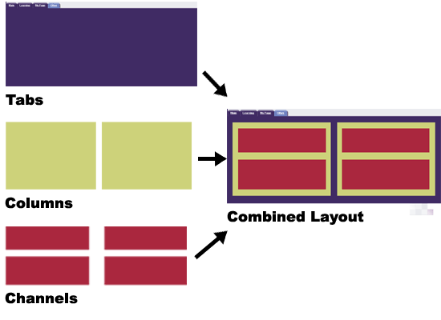
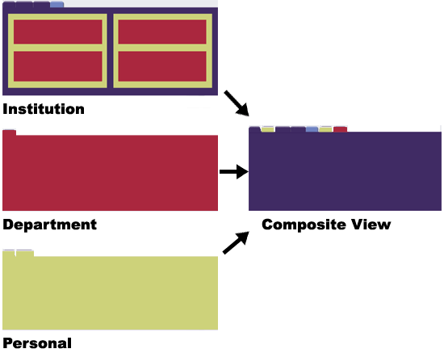

Organization and Navigation
Looking for more help options? Click Here
The layout of Academus Portal is based on a combination of tabs, columns and channels controlled by the security model. The portal takes multiple layouts and combines them to present an end user with a final composite view. Academus tracks individual changes that the end user makes to the composite view. This allows an end user to customize their different layouts, as long as customization is permitted under the parameters of the security model. Each institution will establish its own unique set of tabs which will provide the basis for the end user's personalized composite view .
Legend

In the final composite view, the user will be presented with a format that incorporates any number of tabs, channels and portlets. Remember that the security model used to authenticate a user's login will determine each end user's composite view.

Channel Navigation
Navigation icons in the channel windows allow you to do the following:

|
|
Some of the above icons are optional and will not appear for every channel. |
Icons are placed prominently within each of the channels. These icons are used to perform certain actions, whether it be to add an announcement, delete a calendar entry, or post a message to the discussion forum (to name a few). The following table lists the primary icons you will encounter in your use of the Academus channels and provides a general description of their use.